revisions
Jessie van Buggenum
2021-04-20
Last updated: 2021-05-03
Checks: 7 0
Knit directory: QuRIE-seq_manuscript/
This reproducible R Markdown analysis was created with workflowr (version 1.6.2). The Checks tab describes the reproducibility checks that were applied when the results were created. The Past versions tab lists the development history.
Great! Since the R Markdown file has been committed to the Git repository, you know the exact version of the code that produced these results.
Great job! The global environment was empty. Objects defined in the global environment can affect the analysis in your R Markdown file in unknown ways. For reproduciblity it’s best to always run the code in an empty environment.
The command set.seed(20201117) was run prior to running the code in the R Markdown file. Setting a seed ensures that any results that rely on randomness, e.g. subsampling or permutations, are reproducible.
Great job! Recording the operating system, R version, and package versions is critical for reproducibility.
Nice! There were no cached chunks for this analysis, so you can be confident that you successfully produced the results during this run.
Great job! Using relative paths to the files within your workflowr project makes it easier to run your code on other machines.
Great! You are using Git for version control. Tracking code development and connecting the code version to the results is critical for reproducibility.
The results in this page were generated with repository version aac4bca. See the Past versions tab to see a history of the changes made to the R Markdown and HTML files.
Note that you need to be careful to ensure that all relevant files for the analysis have been committed to Git prior to generating the results (you can use wflow_publish or wflow_git_commit). workflowr only checks the R Markdown file, but you know if there are other scripts or data files that it depends on. Below is the status of the Git repository when the results were generated:
Ignored files:
Ignored: .Rhistory
Ignored: .Rproj.user/
Ignored: data/raw/
Ignored: output/MOFA_aIg.hdf5
Ignored: output/MOFA_aIg.rds
Ignored: output/MOFA_ibru.hdf5
Ignored: output/MOFA_ibru.rds
Ignored: output/data_weights_prot_fact1and3.csv
Ignored: output/metadata.csv
Ignored: output/metadata_Ricard.csv
Ignored: output/paper_figures/
Ignored: output/seu_aIG_samples.rds
Ignored: output/seu_combined_filtered_normalized.rds
Ignored: output/seu_combined_raw.rds
Ignored: output/seu_ibru_samples.rds
Note that any generated files, e.g. HTML, png, CSS, etc., are not included in this status report because it is ok for generated content to have uncommitted changes.
These are the previous versions of the repository in which changes were made to the R Markdown (analysis/revisions.rmd) and HTML (docs/revisions.html) files. If you’ve configured a remote Git repository (see ?wflow_git_remote), click on the hyperlinks in the table below to view the files as they were in that past version.
| File | Version | Author | Date | Message |
|---|---|---|---|---|
| Rmd | aac4bca | Jessie van Buggenum | 2021-05-03 | Added supplementary figure pJAK1 high versus pJAK1 low |
source("code/load_packages.R")
seu_combined_selectsamples <- readRDS("output/seu_aIG_samples.rds")
panellabels <- c('a', 'b', 'c','d' , 'e', 'f', 'g', 'h', 'i', 'j', 'k')
add.textsize <- theme(axis.text.x = element_text(colour = 'black', size = 7),
axis.text.y = element_text(colour = 'black',size=7),
text = element_text(size=7),
axis.text=element_text(size=7),
plot.title = element_text(size=7)
)
colorgradient6_manual <- c("#F7FBFF","#CFE1F2", "#93C4DE", "#4A97C9", "#1F5284", "#0C2236" )
colorgradient6_manual2 <- c("#d4d4d3","#CFE1F2", "#93C4DE", "#4A97C9", "#1F5284", "#0C2236" )
labels <- c("0", "2", "4", "6", "60", "180")p-JAK high vs low
proteindata_counts <- as.data.frame(t(seu_combined_selectsamples@assays$PROT@scale.data)) %>%
mutate(sample = rownames(t(seu_combined_selectsamples@assays$PROT@scale.data)))
metadata.all <- as.data.frame(seu_combined_selectsamples@meta.data) %>%
mutate(sample = rownames((seu_combined_selectsamples@meta.data)))
proteindata_counts <- left_join(proteindata_counts, metadata.all)Joining, by = "sample"toppJAK1 <- proteindata_counts %>%
group_by(time) %>%
top_frac(wt = `p-JAK1`, n = 0.05)
bottompJAK1 <- proteindata_counts %>%
group_by(time) %>%
top_frac(wt = `p-JAK1`, n = -0.05)
proteindata_counts <- proteindata_counts %>%
mutate(highlowpJAK1 = ifelse(sample %in% toppJAK1$sample, "p-JAK1 high", ifelse(sample %in% bottompJAK1$sample, "p-JAK1 low","middle")))
addmeta <- proteindata_counts[,c("highlowpJAK1", "sample")]
rownames(addmeta) <- proteindata_counts$sample
seu_combined_selectsamples <- AddMetaData(seu_combined_selectsamples, addmeta)180 minutes
seu.JAK1.180 <- subset(seu_combined_selectsamples, condition == "180.aIg.contr" & highlowpJAK1 != "middle")
seu.JAK1.180 <- SetIdent(seu.JAK1.180, value = "highlowpJAK1")VlnPlot(seu.JAK1.180,assay = "PROT", features = c("p-JAK1","nCount_PROT", "nCount_RNA"), group.by = "highlowpJAK1",ncol = 3)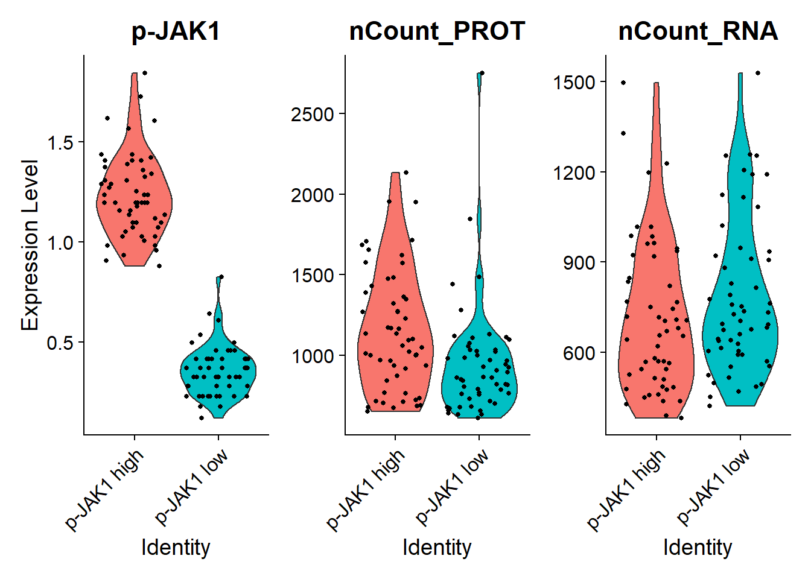
# Find differentially expressed features between CD14+ and FCGR3A+ Monocytes
markers.180 <- FindMarkers(seu.JAK1.180,ident.1 = "p-JAK1 high", ident.2 = "p-JAK1 low", assay = "PROT", slot = "scale.data", logfc.threshold = 0, return.thresh = 1, only.pos = F)
# view results
#markers.180 <- filter(markers.180, cluster == "p-JAK1 high")
#markers.180
# Find differentially expressed features between CD14+ and FCGR3A+ Monocytes
markers.180.RNA <- FindAllMarkers(seu.JAK1.180,assay = "RNA", slot = "data", logfc.threshold = 0.3, return.thresh = 0.01, only.pos = T,min.pct = 0.1)Calculating cluster p-JAK1 lowCalculating cluster p-JAK1 highmarkers.180.RNA <- FindMarkers(seu.JAK1.180,ident.1 = "p-JAK1 high", ident.2 = "p-JAK1 low", assay = "SCT.RNA", slot = "scale.data", logfc.threshold = 0, return.thresh = 1, only.pos = F)
# view results
#markers.180.RNAProtein
library(ggrepel)
markers.180$protein <-rownames(markers.180)
# add a column of NAs
markers.180$diffexpressed <- "NO"
# if log2Foldchange > 0.6 and pvalue < 0.05, set as "UP"
markers.180$diffexpressed[markers.180$avg_diff > 0.25 & markers.180$p_val_adj < 0.01] <- "UP"
# if log2Foldchange < -0.6 and pvalue < 0.05, set as "DOWN"
markers.180$diffexpressed[markers.180$avg_diff < -0.25 & markers.180$p_val_adj < 0.01] <- "DOWN"
mycolors <- c("blue", "red", "black")
names(mycolors) <- c("DOWN", "UP", "NO")
markers.180$delabel <- NA
markers.180$delabel[markers.180$diffexpressed != "NO"] <- markers.180$protein[markers.180$diffexpressed != "NO"]
# Finally, we can organize the labels nicely using the "ggrepel" package and the geom_text_repel() function
# load library
library(ggrepel)
# plot adding up all layers we have seen so far
plot.vulcano.180min <- ggplot(data=markers.180, aes(x=avg_diff , y=-log10(p_val_adj), col=diffexpressed, label=delabel)) +
geom_point(size=0.5) +
theme_minimal() +
geom_text_repel(size=2.2) +
scale_color_manual(values=c("blue", "red", "black")) +
geom_vline(xintercept=c(-0.25, 0.25), col="red") +
geom_hline(yintercept=-log10(0.01), col="red") +
labs(x = expression("Log"[2]*" Fold Change"), y = expression("-log"[10]*" adjusted p-value"), title = "p-JAK1 high vs p-JAK1 low (t = 180 min)") &
add.textsize
plot.vulcano.180min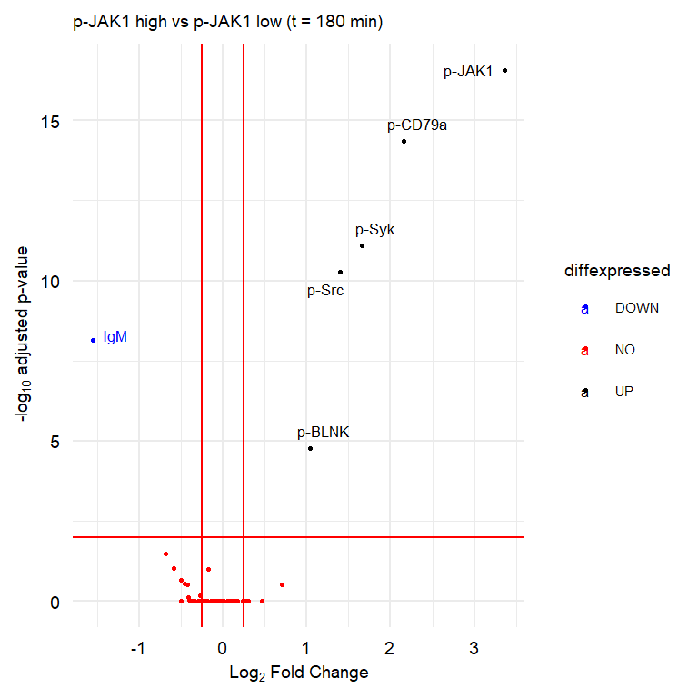
sign.markers180 <- markers.180$protein[markers.180$avg_diff > 0.25 & markers.180$p_val_adj < 0.01 | markers.180$avg_diff < -0.25 & markers.180$p_val_adj < 0.01]
plot.vln.180min <- VlnPlot(seu.JAK1.180,assay = "PROT",slot = "scale.data", features = sign.markers180, group.by = "highlowpJAK1",ncol = 6, pt.size = 0.5) &
add.textsize
plot.vln.180min 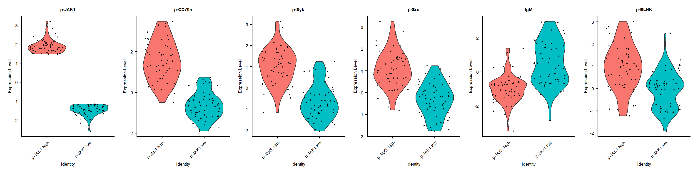
RNA
library(ggrepel)
markers.180.RNA$protein <-rownames(markers.180.RNA)
# add a column of NAs
markers.180.RNA$diffexpressed <- "NO"
# if log2Foldchange > 0.6 and pvalue < 0.05, set as "UP"
markers.180.RNA$diffexpressed[markers.180.RNA$avg_diff > 0.25 & markers.180.RNA$p_val < 0.05] <- "UP"
# if log2Foldchange < -0.6 and pvalue < 0.05, set as "DOWN"
markers.180.RNA$diffexpressed[markers.180.RNA$avg_diff < -0.25 & markers.180.RNA$p_val < 0.05] <- "DOWN"
mycolors <- c("blue", "red", "black")
names(mycolors) <- c("DOWN", "UP", "NO")
markers.180.RNA$delabel <- NA
markers.180.RNA$delabel[markers.180.RNA$diffexpressed != "NO"] <- markers.180.RNA$protein[markers.180.RNA$diffexpressed != "NO"]
# Finally, we can organize the labels nicely using the "ggrepel" package and the geom_text_repel() function
# load library
library(ggrepel)
# plot adding up all layers we have seen so far
plot.vulcano.180min.RNA <- ggplot(data=markers.180.RNA, aes(x=avg_diff, y=-log10(p_val), col=diffexpressed, label=delabel)) +
geom_point() +
theme_minimal() +
geom_text_repel(size=2.2) +
scale_color_manual(values=c("blue", "red", "black")) +
geom_vline(xintercept=c(-0.25, 0.25), col="red") +
geom_hline(yintercept=-log10(0.05), col="red") +
labs(x = expression("Log"[2]*" Fold Change"), y = expression("-log"[10]*" p-value"), title = "p-JAK1 high vs p-JAK1 low (t = 180 min)") &
add.textsize
plot.vulcano.180min.RNA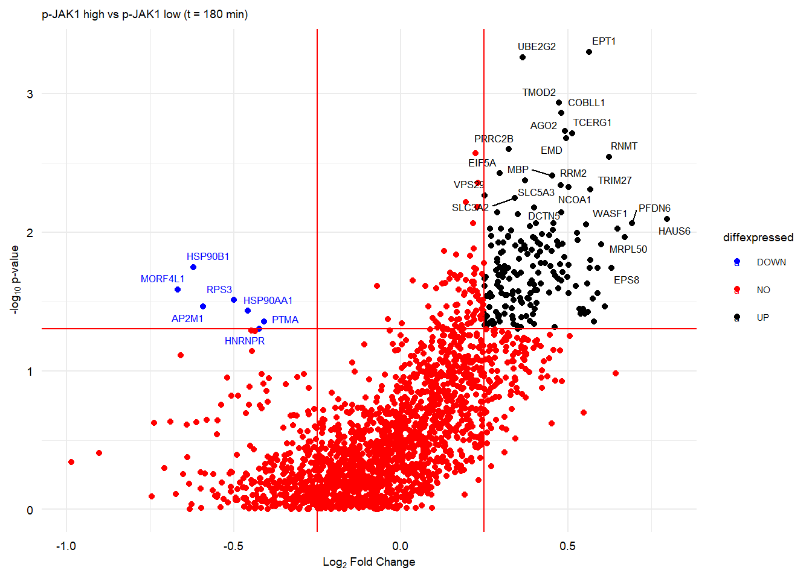
sign.markers180.RNA <- markers.180.RNA$protein[markers.180.RNA$avg_diff > 0.25 & markers.180.RNA$p_val < 0.05]
plot.vln.180min.RNA <- VlnPlot(seu.JAK1.180,assay = "RNA", features = sign.markers180.RNA[1:20], group.by = "highlowpJAK1",ncol = 10) &
add.textsize
plot.vln.180min.RNA 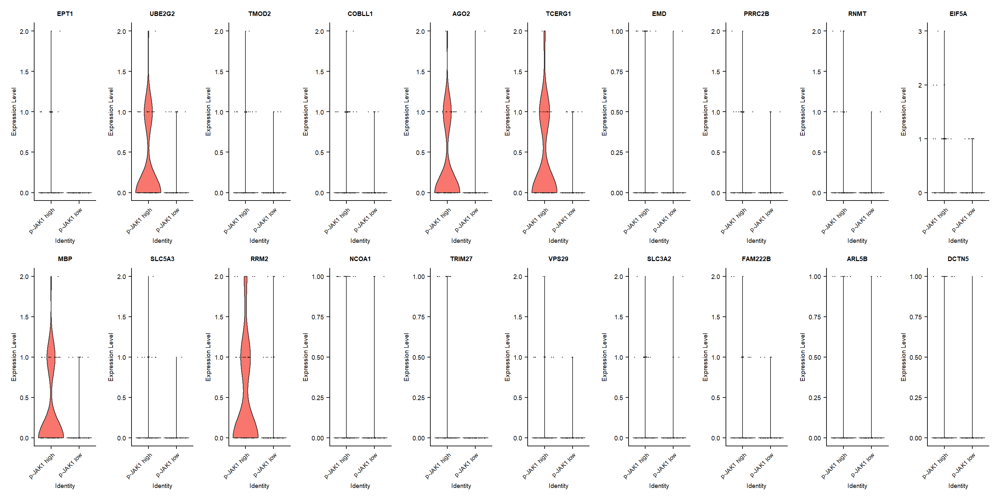
plot 180 min prot
plot_180min <- plot_grid(plot.vulcano.180min, plot.vln.180min, labels = panellabels[c(5,6)], label_size = 10, ncol = 2, rel_widths = c(1,2))Warning: Removed 72 rows containing missing values (geom_text_repel).#ggsave(plot_180min, filename = "output/paper_figures/Fig2.pdf", width = 183, height = 183, units = "mm", dpi = 300, useDingbats = FALSE)
#ggsave(plot_180min, filename = "output/paper_figures/Fig2.png", width = 183, height = 183, units = "mm", dpi = 300)
plot_180min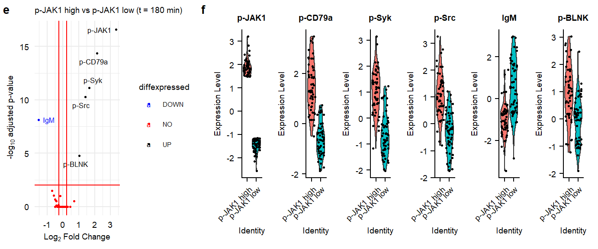
006 minutes
seu.JAK1.006 <- subset(seu_combined_selectsamples, condition == "006.aIg.contr" & highlowpJAK1 != "middle")
seu.JAK1.006 <- SetIdent(seu.JAK1.006, value = "highlowpJAK1")VlnPlot(seu.JAK1.006,assay = "PROT", features = c("p-JAK1","nCount_PROT", "nCount_RNA"), group.by = "highlowpJAK1",ncol = 3)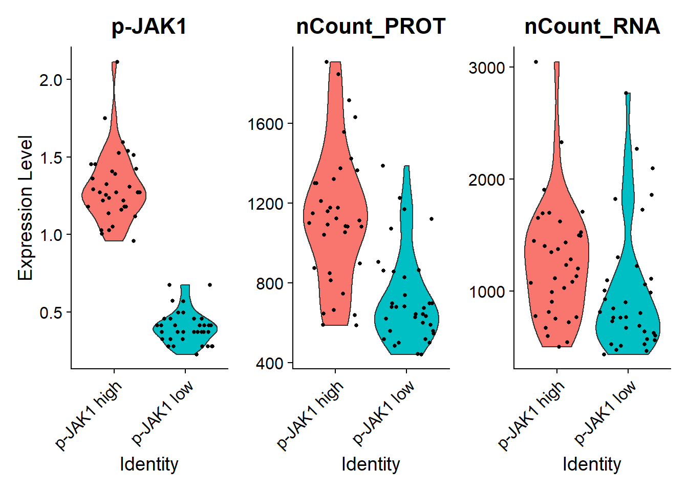
# Find differentially expressed features between CD14+ and FCGR3A+ Monocytes
markers.006 <- FindMarkers(seu.JAK1.006,ident.1 = "p-JAK1 high", ident.2 = "p-JAK1 low", assay = "PROT", slot = "scale.data", logfc.threshold = 0, return.thresh = 1, only.pos = F)
# view results
#markers.006 <- filter(markers.006, cluster == "p-JAK1 high")
#markers.006
# Find differentially expressed features between CD14+ and FCGR3A+ Monocytes
markers.006.RNA <- FindAllMarkers(seu.JAK1.006,assay = "RNA", slot = "data", logfc.threshold = 0.3, return.thresh = 0.01, only.pos = T,min.pct = 0.1)Calculating cluster p-JAK1 highCalculating cluster p-JAK1 lowmarkers.006.RNA <- FindMarkers(seu.JAK1.006,ident.1 = "p-JAK1 high", ident.2 = "p-JAK1 low", assay = "SCT.RNA", slot = "scale.data", logfc.threshold = 0, return.thresh = 1, only.pos = F)
# view results
#markers.006.RNAProtein
library(ggrepel)
markers.006$protein <-rownames(markers.006)
# add a column of NAs
markers.006$diffexpressed <- "NO"
# if log2Foldchange > 0.6 and pvalue < 0.05, set as "UP"
markers.006$diffexpressed[markers.006$avg_diff > 0.25 & markers.006$p_val_adj < 0.01] <- "UP"
# if log2Foldchange < -0.6 and pvalue < 0.05, set as "DOWN"
markers.006$diffexpressed[markers.006$avg_diff < -0.25 & markers.006$p_val_adj < 0.01] <- "DOWN"
mycolors <- c("blue", "red", "black")
names(mycolors) <- c("DOWN", "UP", "NO")
markers.006$delabel <- NA
markers.006$delabel[markers.006$diffexpressed != "NO"] <- markers.006$protein[markers.006$diffexpressed != "NO"]
# Finally, we can organize the labels nicely using the "ggrepel" package and the geom_text_repel() function
# load library
library(ggrepel)
# plot adding up all layers we have seen so far
plot.vulcano.006min <- ggplot(data=markers.006, aes(x=avg_diff , y=-log10(p_val_adj), col=diffexpressed, label=delabel)) +
geom_point(size=0.5) +
theme_minimal() +
geom_text_repel(size=2.2) +
scale_color_manual(values=c("blue", "red", "black")) +
geom_vline(xintercept=c(-0.25, 0.25), col="red") +
geom_hline(yintercept=-log10(0.01), col="red") +
labs(x = expression("Log"[2]*" Fold Change"), y = expression("-log"[10]*" adjusted p-value"), title = "p-JAK1 high vs p-JAK1 low (t = 006 min)") &
add.textsize
plot.vulcano.006min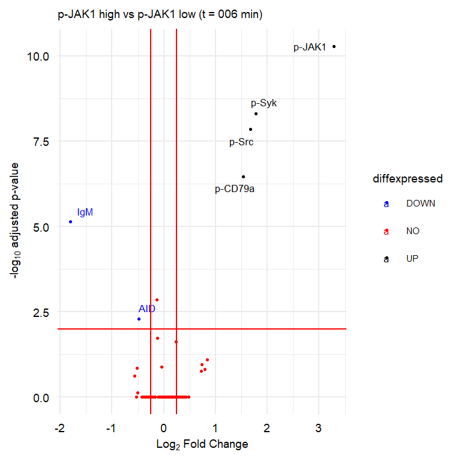
sign.markers006 <- markers.006$protein[markers.006$avg_diff > 0.25 & markers.006$p_val_adj < 0.01 | markers.006$avg_diff < -0.25 & markers.006$p_val_adj < 0.01]
plot.vln.006min <- VlnPlot(seu.JAK1.006,assay = "PROT",slot = "scale.data", features = sign.markers006, group.by = "highlowpJAK1",ncol = 6, pt.size = 0.5) &
add.textsize
plot.vln.006min 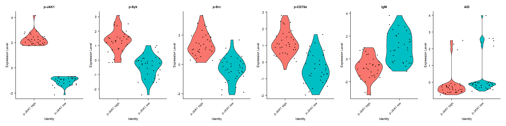
RNA
library(ggrepel)
markers.006.RNA$protein <-rownames(markers.006.RNA)
# add a column of NAs
markers.006.RNA$diffexpressed <- "NO"
# if log2Foldchange > 0.6 and pvalue < 0.05, set as "UP"
markers.006.RNA$diffexpressed[markers.006.RNA$avg_diff > 0.25 & markers.006.RNA$p_val < 0.05] <- "UP"
# if log2Foldchange < -0.6 and pvalue < 0.05, set as "DOWN"
markers.006.RNA$diffexpressed[markers.006.RNA$avg_diff < -0.25 & markers.006.RNA$p_val < 0.05] <- "DOWN"
mycolors <- c("blue", "red", "black")
names(mycolors) <- c("DOWN", "UP", "NO")
markers.006.RNA$delabel <- NA
markers.006.RNA$delabel[markers.006.RNA$diffexpressed != "NO"] <- markers.006.RNA$protein[markers.006.RNA$diffexpressed != "NO"]
# Finally, we can organize the labels nicely using the "ggrepel" package and the geom_text_repel() function
# load library
library(ggrepel)
# plot adding up all layers we have seen so far
plot.vulcano.006min.RNA <- ggplot(data=markers.006.RNA, aes(x=avg_diff, y=-log10(p_val), col=diffexpressed, label=delabel)) +
geom_point() +
theme_minimal() +
geom_text_repel(size=2.2) +
scale_color_manual(values=c("blue", "red", "black")) +
geom_vline(xintercept=c(-0.25, 0.25), col="red") +
geom_hline(yintercept=-log10(0.05), col="red") +
labs(x = expression("Log"[2]*" Fold Change"), y = expression("-log"[10]*" p-value"), title = "p-JAK1 high vs p-JAK1 low (t = 006 min)") &
add.textsize
plot.vulcano.006min.RNA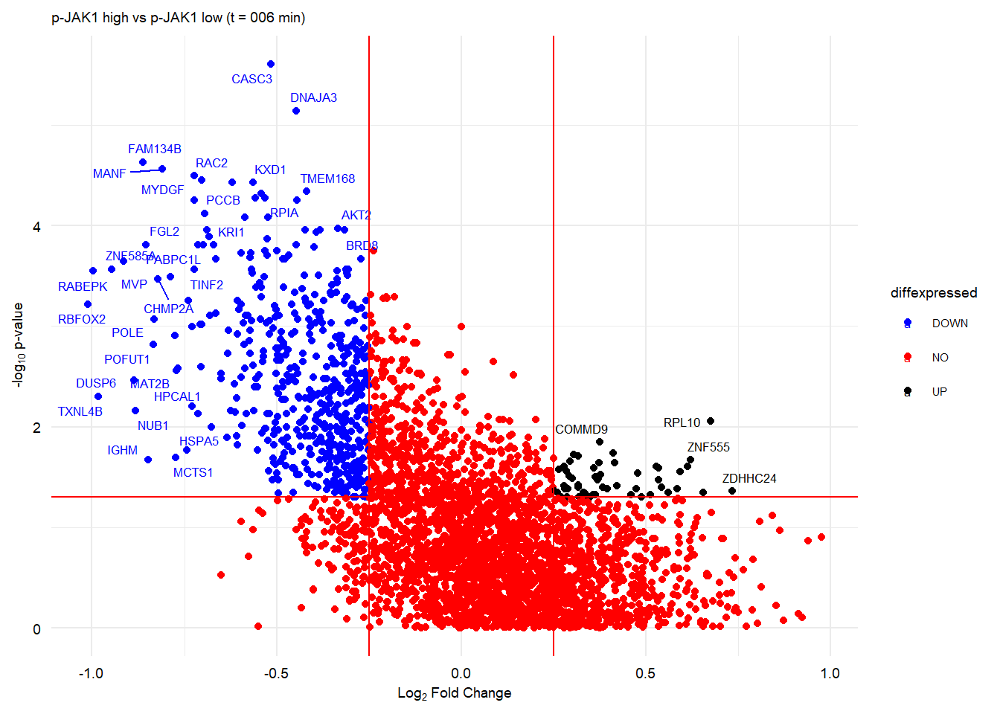
sign.markers006.RNA <- markers.006.RNA$protein[markers.006.RNA$avg_diff > 0.25 & markers.006.RNA$p_val < 0.05]
plot.vln.006min.RNA <- VlnPlot(seu.JAK1.006,assay = "RNA", features = sign.markers006.RNA[1:20], group.by = "highlowpJAK1",ncol = 10) &
add.textsize
plot.vln.006min.RNA 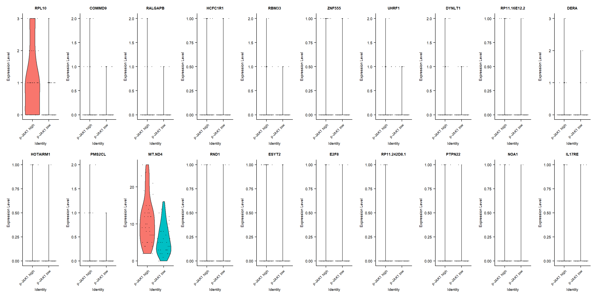
plot 006 min prot
plot_006min <- plot_grid(plot.vulcano.006min, plot.vln.006min, labels = panellabels[c(3,4)], label_size = 10, ncol = 2, rel_widths = c(1,2))Warning: Removed 74 rows containing missing values (geom_text_repel).#ggsave(plot_006min, filename = "output/paper_figures/Fig2.pdf", width = 183, height = 183, units = "mm", dpi = 300, useDingbats = FALSE)
#ggsave(plot_006min, filename = "output/paper_figures/Fig2.png", width = 183, height = 183, units = "mm", dpi = 300)
plot_006min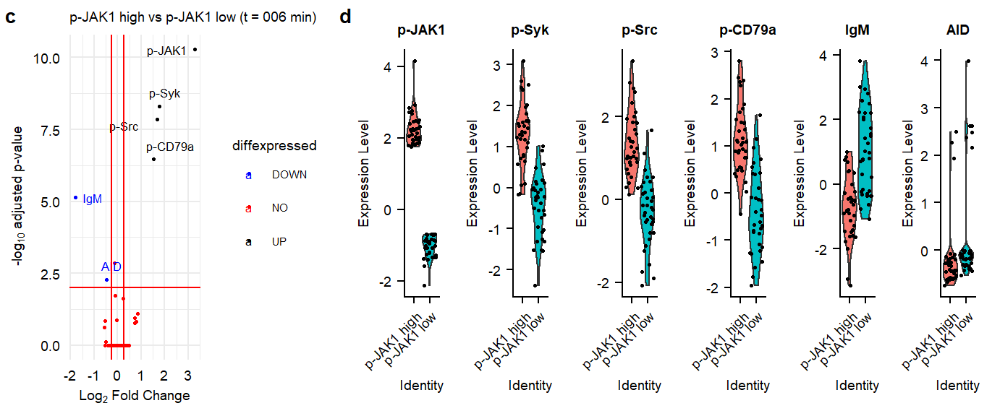
002 minutes
seu.JAK1.002 <- subset(seu_combined_selectsamples, condition == "002.aIg.contr" & highlowpJAK1 != "middle")
seu.JAK1.002 <- SetIdent(seu.JAK1.002, value = "highlowpJAK1")VlnPlot(seu.JAK1.002,assay = "PROT", features = c("p-JAK1","nCount_PROT", "nCount_RNA"), group.by = "highlowpJAK1",ncol = 3)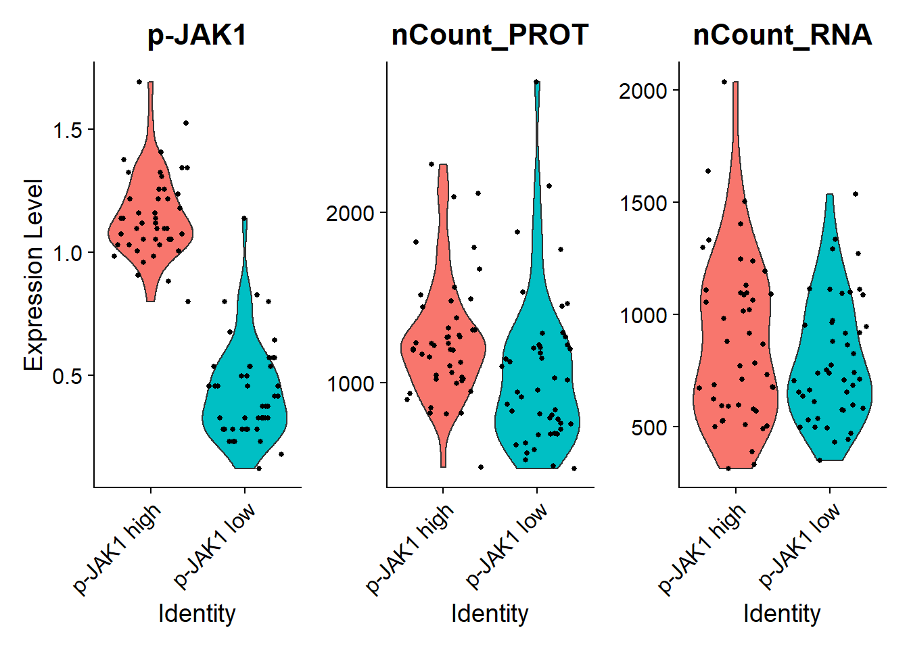
# Find differentially expressed features between CD14+ and FCGR3A+ Monocytes
markers.002 <- FindMarkers(seu.JAK1.002,ident.1 = "p-JAK1 high", ident.2 = "p-JAK1 low", assay = "PROT", slot = "scale.data", logfc.threshold = 0, return.thresh = 1, only.pos = F)
# view results
#markers.002 <- filter(markers.002, cluster == "p-JAK1 high")
#markers.002
# Find differentially expressed features between CD14+ and FCGR3A+ Monocytes
markers.002.RNA <- FindAllMarkers(seu.JAK1.002,assay = "RNA", slot = "data", logfc.threshold = 0.3, return.thresh = 0.01, only.pos = T,min.pct = 0.1)Calculating cluster p-JAK1 highCalculating cluster p-JAK1 lowmarkers.002.RNA <- FindMarkers(seu.JAK1.002,ident.1 = "p-JAK1 high", ident.2 = "p-JAK1 low", assay = "SCT.RNA", slot = "scale.data", logfc.threshold = 0, return.thresh = 1, only.pos = F)
# view results
#markers.002.RNAProtein
library(ggrepel)
markers.002$protein <-rownames(markers.002)
# add a column of NAs
markers.002$diffexpressed <- "NO"
# if log2Foldchange > 0.6 and pvalue < 0.05, set as "UP"
markers.002$diffexpressed[markers.002$avg_diff > 0.25 & markers.002$p_val_adj < 0.01] <- "UP"
# if log2Foldchange < -0.6 and pvalue < 0.05, set as "DOWN"
markers.002$diffexpressed[markers.002$avg_diff < -0.25 & markers.002$p_val_adj < 0.01] <- "DOWN"
mycolors <- c("blue", "red", "black")
names(mycolors) <- c("DOWN", "UP", "NO")
markers.002$delabel <- NA
markers.002$delabel[markers.002$diffexpressed != "NO"] <- markers.002$protein[markers.002$diffexpressed != "NO"]
# Finally, we can organize the labels nicely using the "ggrepel" package and the geom_text_repel() function
# load library
library(ggrepel)
# plot adding up all layers we have seen so far
plot.vulcano.002min <- ggplot(data=markers.002, aes(x=avg_diff , y=-log10(p_val_adj), col=diffexpressed, label=delabel)) +
geom_point(size=0.5) +
theme_minimal() +
geom_text_repel(size=2.2) +
scale_color_manual(values=c("blue", "red", "black")) +
geom_vline(xintercept=c(-0.25, 0.25), col="red") +
geom_hline(yintercept=-log10(0.01), col="red") +
labs(x = expression("Log"[2]*" Fold Change"), y = expression("-log"[10]*" adjusted p-value"), title = "p-JAK1 high vs p-JAK1 low (t = 002 min)") &
add.textsize
plot.vulcano.002min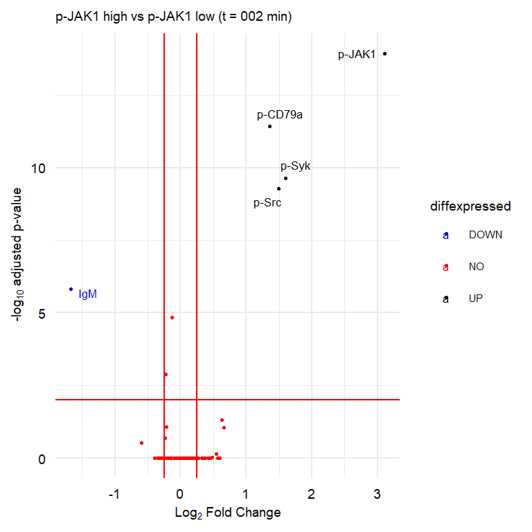
sign.markers002 <- markers.002$protein[markers.002$avg_diff > 0.25 & markers.002$p_val_adj < 0.01 | markers.002$avg_diff < -0.25 & markers.002$p_val_adj < 0.01]
plot.vln.002min <- VlnPlot(seu.JAK1.002,assay = "PROT",slot = "scale.data", features = sign.markers002, group.by = "highlowpJAK1",ncol = 6, pt.size = 0.5) &
add.textsize
plot.vln.002min 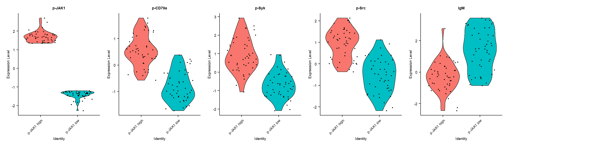
RNA
library(ggrepel)
markers.002.RNA$protein <-rownames(markers.002.RNA)
# add a column of NAs
markers.002.RNA$diffexpressed <- "NO"
# if log2Foldchange > 0.6 and pvalue < 0.05, set as "UP"
markers.002.RNA$diffexpressed[markers.002.RNA$avg_diff > 0.25 & markers.002.RNA$p_val < 0.05] <- "UP"
# if log2Foldchange < -0.6 and pvalue < 0.05, set as "DOWN"
markers.002.RNA$diffexpressed[markers.002.RNA$avg_diff < -0.25 & markers.002.RNA$p_val < 0.05] <- "DOWN"
mycolors <- c("blue", "red", "black")
names(mycolors) <- c("DOWN", "UP", "NO")
markers.002.RNA$delabel <- NA
markers.002.RNA$delabel[markers.002.RNA$diffexpressed != "NO"] <- markers.002.RNA$protein[markers.002.RNA$diffexpressed != "NO"]
# Finally, we can organize the labels nicely using the "ggrepel" package and the geom_text_repel() function
# load library
library(ggrepel)
# plot adding up all layers we have seen so far
plot.vulcano.002min.RNA <- ggplot(data=markers.002.RNA, aes(x=avg_diff, y=-log10(p_val), col=diffexpressed, label=delabel)) +
geom_point() +
theme_minimal() +
geom_text_repel(size=2.2) +
scale_color_manual(values=c("blue", "red", "black")) +
geom_vline(xintercept=c(-0.25, 0.25), col="red") +
geom_hline(yintercept=-log10(0.05), col="red") +
labs(x = expression("Log"[2]*" Fold Change"), y = expression("-log"[10]*" p-value"), title = "p-JAK1 high vs p-JAK1 low (t = 002 min)") &
add.textsize
plot.vulcano.002min.RNA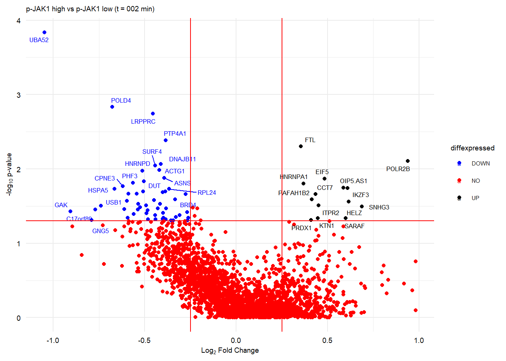
sign.markers002.RNA <- markers.002.RNA$protein[markers.002.RNA$avg_diff > 0.25 & markers.002.RNA$p_val < 0.05]
plot.vln.002min.RNA <- VlnPlot(seu.JAK1.002,assay = "RNA", features = sign.markers002.RNA[1:20], group.by = "highlowpJAK1",ncol = 10) &
add.textsizeWarning in FetchData(object = object, vars = features, slot = slot): The
following requested variables were not found: NAplot.vln.002min.RNA 
plot 002 min prot
plot_002min <- plot_grid(plot.vulcano.002min, plot.vln.002min, labels = panellabels[c(1,2)], label_size = 10, ncol = 2, rel_widths = c(1,2))Warning: Removed 75 rows containing missing values (geom_text_repel).#ggsave(plot_002min, filename = "output/paper_figures/Fig2.pdf", width = 183, height = 183, units = "mm", dpi = 300, useDingbats = FALSE)
#ggsave(plot_002min, filename = "output/paper_figures/Fig2.png", width = 183, height = 183, units = "mm", dpi = 300)
plot_002min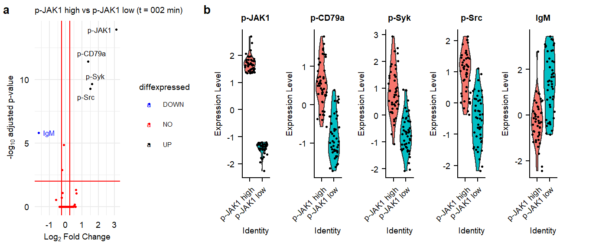
gather plot
plot_all <- plot_grid(plot_002min,plot_006min,plot_180min , labels =c("", "", ""), ncol = 1, rel_heights = c(1,1,1))
ggsave(plot_all, filename = "output/paper_figures/Suppl_pJAK1_highlow.pdf", width = 183, height = 140, units = "mm", dpi = 300, useDingbats = FALSE)
ggsave(plot_all, filename = "output/paper_figures/Suppl_pJAK1_highlow.png", width = 183, height = 140, units = "mm", dpi = 300)
plot_all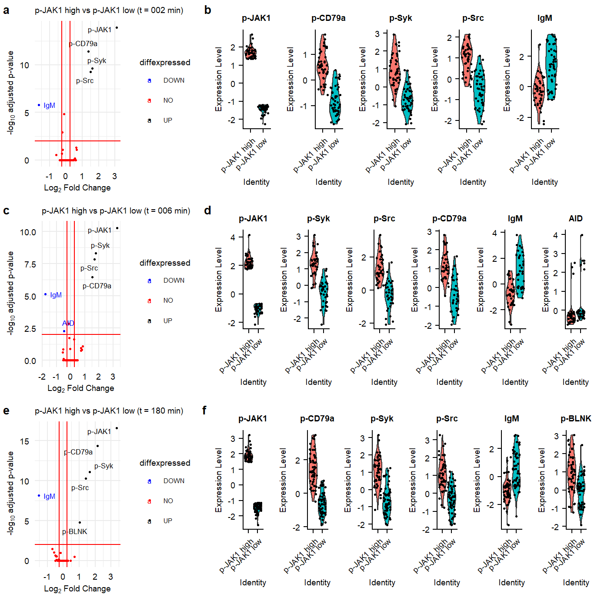
sessionInfo()R version 4.0.3 (2020-10-10)
Platform: x86_64-w64-mingw32/x64 (64-bit)
Running under: Windows 10 x64 (build 19042)
Matrix products: default
locale:
[1] LC_COLLATE=English_Netherlands.1252 LC_CTYPE=English_Netherlands.1252
[3] LC_MONETARY=English_Netherlands.1252 LC_NUMERIC=C
[5] LC_TIME=English_Netherlands.1252
attached base packages:
[1] parallel stats4 grid stats graphics grDevices utils
[8] datasets methods base
other attached packages:
[1] png_0.1-7 forcats_0.5.1
[3] clusterProfiler_3.18.1 clusterProfiler.dplyr_0.0.2
[5] enrichplot_1.10.2 org.Hs.eg.db_3.12.0
[7] AnnotationDbi_1.52.0 IRanges_2.24.1
[9] S4Vectors_0.28.1 Biobase_2.50.0
[11] BiocGenerics_0.36.0 ggridges_0.5.3
[13] cowplot_1.1.1 ggtext_0.1.1
[15] ggplotify_0.0.5 ggcorrplot_0.1.3
[17] ggrepel_0.9.1 ggpubr_0.4.0
[19] scico_1.2.0 MOFA2_1.1.17
[21] extrafont_0.17 patchwork_1.1.1
[23] RColorBrewer_1.1-2 viridis_0.5.1
[25] viridisLite_0.3.0 ggsci_2.9
[27] sctransform_0.3.2 ggthemes_4.2.4
[29] matrixStats_0.57.0 kableExtra_1.3.1
[31] gridExtra_2.3 SeuratObject_4.0.0
[33] Seurat_4.0.0 ggplot2_3.3.3
[35] scales_1.1.1 tidyr_1.1.2
[37] dplyr_1.0.3 stringr_1.4.0
[39] workflowr_1.6.2
loaded via a namespace (and not attached):
[1] rappdirs_0.3.2 scattermore_0.7 bit64_4.0.5
[4] knitr_1.31 irlba_2.3.3 DelayedArray_0.16.1
[7] data.table_1.13.6 rpart_4.1-15 generics_0.1.0
[10] RSQLite_2.2.3 shadowtext_0.0.7 RANN_2.6.1
[13] future_1.21.0 bit_4.0.4 spatstat.data_1.7-0
[16] webshot_0.5.2 xml2_1.3.2 httpuv_1.5.5
[19] assertthat_0.2.1 xfun_0.20 hms_1.0.0
[22] evaluate_0.14 promises_1.1.1 readxl_1.3.1
[25] igraph_1.2.6 DBI_1.1.1 htmlwidgets_1.5.3
[28] purrr_0.3.4 ellipsis_0.3.1 corrplot_0.84
[31] backports_1.2.1 deldir_0.2-10 MatrixGenerics_1.2.0
[34] vctrs_0.3.6 ROCR_1.0-11 abind_1.4-5
[37] cachem_1.0.1 withr_2.4.1 ggforce_0.3.2
[40] goftest_1.2-2 cluster_2.1.0 DOSE_3.16.0
[43] lazyeval_0.2.2 crayon_1.3.4 basilisk.utils_1.2.1
[46] pkgconfig_2.0.3 labeling_0.4.2 tweenr_1.0.1
[49] nlme_3.1-149 rlang_0.4.10 globals_0.14.0
[52] lifecycle_0.2.0 miniUI_0.1.1.1 downloader_0.4
[55] filelock_1.0.2 extrafontdb_1.0 cellranger_1.1.0
[58] rprojroot_2.0.2 polyclip_1.10-0 lmtest_0.9-38
[61] Matrix_1.2-18 carData_3.0-4 Rhdf5lib_1.12.1
[64] zoo_1.8-8 whisker_0.4 pheatmap_1.0.12
[67] KernSmooth_2.23-17 rhdf5filters_1.2.0 blob_1.2.1
[70] qvalue_2.22.0 parallelly_1.23.0 rstatix_0.6.0
[73] gridGraphics_0.5-1 ggsignif_0.6.0 memoise_2.0.0
[76] magrittr_2.0.1 plyr_1.8.6 ica_1.0-2
[79] compiler_4.0.3 scatterpie_0.1.5 fitdistrplus_1.1-3
[82] listenv_0.8.0 pbapply_1.4-3 MASS_7.3-53
[85] mgcv_1.8-33 tidyselect_1.1.0 stringi_1.5.3
[88] highr_0.8 yaml_2.2.1 GOSemSim_2.16.1
[91] fastmatch_1.1-0 tools_4.0.3 future.apply_1.7.0
[94] rio_0.5.16 rstudioapi_0.13 foreign_0.8-80
[97] git2r_0.28.0 farver_2.0.3 Rtsne_0.15
[100] ggraph_2.0.5 digest_0.6.27 rvcheck_0.1.8
[103] BiocManager_1.30.10 shiny_1.6.0 Rcpp_1.0.6
[106] gridtext_0.1.4 car_3.0-10 broom_0.7.3
[109] later_1.1.0.1 RcppAnnoy_0.0.18 httr_1.4.2
[112] colorspace_2.0-0 rvest_0.3.6 fs_1.5.0
[115] tensor_1.5 reticulate_1.18 splines_4.0.3
[118] uwot_0.1.10 spatstat.utils_2.1-0 graphlayouts_0.7.1
[121] basilisk_1.2.1 plotly_4.9.3 xtable_1.8-4
[124] jsonlite_1.7.2 spatstat_1.64-1 tidygraph_1.2.0
[127] R6_2.5.0 pillar_1.4.7 htmltools_0.5.1.1
[130] mime_0.9 glue_1.4.2 fastmap_1.1.0
[133] BiocParallel_1.24.1 codetools_0.2-16 fgsea_1.16.0
[136] lattice_0.20-41 tibble_3.0.5 curl_4.3
[139] leiden_0.3.7 zip_2.1.1 GO.db_3.12.1
[142] openxlsx_4.2.3 Rttf2pt1_1.3.8 limma_3.46.0
[145] survival_3.2-7 rmarkdown_2.6 munsell_0.5.0
[148] DO.db_2.9 rhdf5_2.34.0 HDF5Array_1.18.0
[151] haven_2.3.1 reshape2_1.4.4 gtable_0.3.0